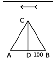
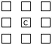
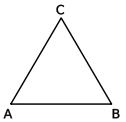
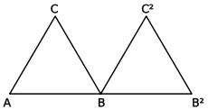

Беседа 701 от 3877 · Беинса Дуно
Сложни движения на съзнанието. Светла точка в съзнанието
Само светлият път на Мъдростта води към Истината.
Тя постоянно ни весели.
Прочете се резюме от темите: „Произход на глаголните форми“.
Прочетоха се няколко от работите върху темата „Основните елементи в геометрията“.
За следния път ще пишете върху тема № 19 „Отношение между моралните чувства и умствените способности“.
Сега ние влизаме в една област, наречена „сложни движения на съзнанието“. Аз ще направя само няколко малки бележки, върху които вие ще може да мислите, да разсъждавате. Нашата цел е да ви направим философи, да ви подтикнем да мислите. Философията седи в това, дали човек може да мисли. Научи ли се човек да мисли правилно, другата философия ще дойде сама по себе си. Човешкото съзнание може да се проектира извън индивида, т.е. съзнанието на една душа може да се проектира и да пусне корени в друга душа. Разбира се, това се отнася до висшето, до Божественото съзнание. Когато ние казваме, че Божественото живее в човека, подразбираме, че има едно специално място, дето Божественото съзнание е локализирано. У човека има една особена любов, едно особено съзнание – да съзнава само Бога и то като едно цяло вътре в себе си.
Да кажем, че дадена математическа точка A представлява нашето съзнание в действие.
Това съзнание действа извън пространството, т.е. не фигурира на физическия свят. То върви по една права линия и се самоопределя в точка B. Този изминат път AB представлява едно разширение на съзнанието. Щом съзнанието A достигне своя краен предел на разширение, човек започва да чувства, че остарява, че няма повече накъде да се движи.

Когато човек е най-силен, когато е в разцвета на силите си, тогава той е и в разцвета на съзнанието си и се намира на равнодействащата линия. Но той като не разбира закона на движението, което продължава към B, същевременно усеща едно слизане. Точката C обаче не е известна за него. За пример, човек съзнава, че се е родил и че ще умре, съзнава, че от A ще отиде към B. Отде знае това? Защото майка му е отишла от A към B. Баща му също е отишъл от A към B. Той съзнава всичко това, но какво има извън A, той не знае. Какво има в онзи свят, също той не знае. Онзи свят е горе, при точка C. Човек не съзнава това движение към точка C, защото то представлява духовен елемент. Когато се говори в окултната наука, че трябва да събудим Божественото в себе си, подразбира се, именно, това движение на съзнанието към C. Самият човек не съзнава това движение, не съзнава Божествения елемент. Следователно вие може математически да си направите една пропорция. Ако разстоянието от A до B е 100 км, а същевременно има едно движение от A към C и от C към B, тогава какво ще бъде разстоянието на втория път, а именно от A до C? Сега вие ще изпаднете в едно заблуждение. В геометрията това разстояние е равно на разстоянието AB, защото това са страни на един равностранен триъгълник, но когато разсъждавате за Божествения живот, за плоскост и кубове, въпросът не е така – тук разстоянието AC ще бъде два пъти по-голямо от AB. За пример, в обикновената геометрия определяте посоките с думите „нагоре“ и „надолу“, но като влезете в духовния свят, дето ще изучавате същността на нещата, няма да употребявате думите „нагоре“ и „надолу“ – там отношенията са други.

Следователно Божественото съзнание се движи два пъти по-бързо, отколкото човешкото съзнание, но нам се чини, че пътят, който изминава то, е два пъти по-дълъг, защото не сме тъй будни за него, както сме будни за физическото съзнание. Тук имате закона за единицата и двойката, отношението на които е 1 : 2. Числото две в дадения случай показва движението на единицата. Тази идея е малко сложна, но ще ви я обясня. Допуснете, че единицата сте вие, а двете, това е вашият кон. Вие имате да пътува още някъде, да извършите известна работа, която е X – неизвестна. Извършването на тази работа ще зависи от бързината на вашия кон, от способността на движението му. В дадения случай човешкото съзнание е само орган – носител на Божественото съзнание.
Значи, в съзнанието на човека едновременно има две течения, които трябва да се доловят. Всеки от вас може да наблюдава тия течения. За пример, минавате покрай някоя градина, погледнете към плодовете ѝ, искате да си откъснете от тях. Едновременно с появяването на тази мисъл се явява и друга мисъл – нещо дълбоко във вас ви казва: Не, ти не трябва да взимаш от тия плодове. Отде се ражда последната мисъл във вас? – Тя иде от Божественото съзнание. Вие казвате: Ама аз съм гладен! Че вие още не знаете дали този плод не е отровен. Дървото може да е хубаво, но ако вие изядете този плод, вашият живот може да се спре в развитието си, затова Божественото съзнание ви казва: Няма да ядеш от този плод. Божественото съзнание няма да ти обяснява защо и за какво няма да ядеш този плод. То никога не обяснява, само казва: „Не, недей!“ – нищо повече. То казва: това или онова няма да правиш. Всичката погрешка на съвременните моралисти или религиозни хора е в това, че те запитват: „Защо да не правя това или онова?“ Божественото никога не отговаря. То казва: „Не!“ Ако ти се подчиниш на това, което Божественото съзнание ти подсказва, след време, в твоите старини, туй Висше съзнание ще дойде да ти обясни всичко. Това е, което съвременните философи наричат висшето „Аз“ в човека.
И тъй, в човека има две съзнания: нисше и висше съзнание. Божественото е висшето съзнание и като дойде То, ще ти обясни нещата, защото То черпи знанията си от един по-висш източник. Туй съзнание ще хвърли светлина върху всички философски въпроси, които занимават ума ви. И философи, и учени страдат от един дефект, че искат в даден случай да разберат всичко, а това е невъзможно. По никой начин не може това. Красотата в живота, красотата в науката не седи в много знания. Истинската красота е в знанието на доброто. Красотата в науката, в природата, в живота седи в онези микроскопически хубости и добрини, които едва долавяме. Туй, което никой не може да види, на него да се радваме. Следователно радвай се на тия малки, микроскопически точици които никой не може да ти отнеме.
Сега всички хора мислят за грандиозното, за великото, но то никога не иде. Най-великите неща в света се дават все в микроскопически величини. Някои хора искат да блеснат изведнъж, в един момент да станат чисти и святи. Не, това е заблуждение. Аз искам да ви обърна внимание върху това, къде да гледате и как да гледате. Вие трябва да гледате себе си, но ако ви кажа само толкова, ще се намерите в чудо, защото „себе си“, това представлява за вас още една неопределена величина. Ако гледате на „себе си“ тъй, както сега разбирате това, в дълбочината на вашата душа ще забележите една едва уловима светла точица. Онзи, който не разбира това, търси своя идеал вън от тази точица. Силата на светлината и е една и съща, тя никога нито се увеличава, нито се намалява. Нейният цвят е приятен. В тази точица някой път се явяват грамадни огньове – тук пламне един огън, там пламне друг огън, но в няколко часа всичко изгасва – като че се създават някакви светове. Някой път тия големи огньове, които се образуват около вашето Божествено съзнание, ви заблуждават. Опитният окултен ученик внимава само в тази точица, а тия огньове не го интересуват. Когато някой ангел тръгне от Божествения свят за Земята, оттам Земята се вижда като една много малка точица. Този ангел вижда наоколо си милиони още големи слънца, но той не се самозаблуждава от тях, той държи тази малка светла точица и по нея се ръководи да дойде на Земята. Обаче хората на Земята не правят тъй. Законът е изменен от тях. Те като тръгнат по пътя за Божествения свят и видят някое голямо слънце, казват: Тук е животът. После, видят друго някое слънце и казват: Там е животът. Ходят натук-натам, мятат се, докато животът изтече и казват: Нищо не можахме да направим. Тъй е, тия слънца са много големи, непостижими са. Те представляват това, което в обикновения живот наричат „непостижимите идеали“.
И тъй, от сега вече ще гледате в себе си, няма какво да се смущавате, да правите разлика между вашето съзнание и Божественото съзнание. Ще направите един малък опит, да знаете как да различавате тия съзнания. В човешкото съзнание има едно малко колебание, което можете да проверите на опит. Това колебание може да ся представите като една вълнообразна линия. Вълните показват постоянните колебания в човешкото съзнание. Затова, именно, човек е всякога недоволен от себе си. Обаче при това постоянно движение в себе си човек усеща и другото, висшето съзнание в себе си, което всякога е тихо и спокойно. И когато човек е развълнуван, обезсърчен, тази малка светлинка – Божественото съзнание, казва на човешкото съзнание: Не бой се, всичко ще се свърши добре! Ти се спираш, но то казва: Не бой се! Ти философстваш, питаш: Как ще се свърши тази работа? – Добре ще се свърши. Само толкова казва Божественото съзнание, но ти чувстваш дълбоко в себе си едно спокойствие. И най-после, като се свърши работата добре. Божественото съзнание казва: Видя ли, нали ти казах, че ще се свърши добре? Божественото съзнание никога не казва, че от теб човек няма да стане. Това е човешкото съзнание, което се раздвоява и казва: От теб човек няма да стане. Божественото съзнание казва: Ти ще станеш човек. Но как? – Като държиш постоянно в ума си съзнанието AC, т.е. движение нагоре към C.
Сега аз ви навеждам на една реална философия, която външно изглежда малко отвлечена, но в нея има едно микроскопическо приложение. И всеки учител, който ви каже, че може да имате някакви грандиозни резултати, не ви казва истината. Истинският Учител ще ви покаже малката светлинка. И ако вие сте доблестен, ако имате характер, ако имате воля да се движите, ще вървите по линията на таза малка светлинка във вашето съзнание. Като се движите по тази линия, ще се намерите във възможностите на друг един свят. Мнозина от светиите, мнозина отшелници в Индия, много учени хора са изгубили своя живот в търсене на Божественото съзнание. Напразно са изгубили живота си. Те трябвало да търсят малката светлинка в себе си, която би им допринесла много по-голяма радост, отколкото всичките радости, които са имали до това време. И ако вие съберете всички радости, които сте имали досега, половината от тях даже не може да се сравнят с тази малка радост, която може да ви достави малката светлинка в съзнанието. В тази светлинка вие имате вече нещо реално. Към нея ще погледнете в най-големите бури на живота си. Тя ще ви допринесе нещо повече, отколкото всичките други блага, които сте имали. Свети ли тази малка светлинка във вашето съзнание, свети ли този фар, морето може да се вълнува колкото ще, но вие бъдете уверени, че нищо не е в състояние да ви извади от този път. Загасне ли тази малка светлинка, изгубите ли този фар, тогава можете да попаднете в една погрешка. Това е не защото сте изоставени, но понеже хората често взимат противоположна посока на Божественото съзнание, вследствие на което изгубват тази малка светлинка и не знаят накъде се движат. И сега единственото нещо, което ви остава, е да се ориентирате накъде се движи това Божествено съзнание и да влезете в посоката на неговото движение. Вие едновременно ще се движите в две посоки, т.е. ще реализирате два живота: от една страна ще развивате човешкото съзнание, а от друга страна ще се стремите да се движите към Бога.
Ако бих ви запитал какво значи стремеж към „себе си“, как бихте го определили? Виждате колко е мъчно да се разясни тази проста истина. Не само че е мъчно да се разясни, но мъчно е и да се разбере. Защото онова, което се изяснява, някой път остава не разбрано. Трудно е да се дадат тези обяснения на един човешки език.

Някои представят тия движения по следния начин: Щом се движи A към B, имате вече правата линия AB. После пък A се движи към C и B се движи към C, при което се образува триъгълникът ACB. Значи, тук едновременно има два пътя.
Сега, бих желал един от учениците да каже основната идея от всичко казано дотук. Какво разбрахте от всичко казано? Казва нова светлина се внесе в ума ви? (– Че насоката на целия ни живот зависи от малката светла точица.) Да, и още това, че съзнанието има двояко движение. Трябва да знаете, че щом срещнете съпротивление, то е, понеже материята, в която живеете, е гъста. Затова трябва да знаете, че при движението ACB на вашето съзнание, т.е. при движението си към Божественото се намират всички благоприятни условия за вас. Туй движение ACB приготовлява правия път на вашето съзнание, което може да излезе от тази гъста материя. То е, което ще ви повдигне. И когато някой индивид стигне точката C нагоре, той се повдига и пътят се изменя. Тогава той се намира в едно по-високо поле, или при едно по-високо разбиране. Някой път може да се случи обратното – пак да се върнете по същия път.
Представяйте си триъгълника ACB. Носете всякога в съзнанието си движението AC нагоре, защото то е потребно за вашите философски разбирания. То е един метод в школата. Някой окултисти дават друго определение за страните на триъгълника, като казват, че AC представлява пътя на сърцето, CB – пътя на ума, а AB – пътя на тялото. Това е едно замаскиране на въпросите. Според тях умът и сърцето се стремят да организират тялото. Не е така. Линията AC представлява движението на Божественото съзнание. Но някой път това движение в своята възходяща линия минава през ума. Някой път процесът е обратен: при възкачването си Божественото съзнание минава през ума, а при слизането си – през сърцето. Значи, и едното, и другото става. Например движението на Божественото съзнание у мъжа и жената не върви в една и съща посока. Движението на Божественото съзнание у мъжа започва от A, т.е. от дясно и върви към ляво. Но ще имате предвид едно нещо: в Бога има само една страна, там няма лява и дясна страна. Абсолютното има само една страна.
Следователно в дадения случай C показва само посоката към Божественото. Да кажем, че A тръгва отдясно и върви нагоре към Божественото C. Но като дойде до тази точка, то казва: аз не мога да отида до Бога, но да се върна поне назад. И не се минава много време, слиза във B. Тъй се определя неговият живот. Това е не защото не може да отиде нагоре, но защото не може да се задържи в тази точка C. И теософите казват, че след като умре човек, душата му минава първо през астралния свят, после през менталния и най-после в причинния. Понеже не може да отиде по-нататък от причинния свят, спира се тук известно време да размишлява върху причините и последствията на нещата в живота. В него се заражда желание да се върне отново на земята. За този цикъл на душата говорят теософите. От всичко това, което ви говорих, искам да остане една обща идея у вас, защото ако се спрете върху подробностите, те ще ви спънат. Линията AC представлява едно движение нагоре, към Божественото, но щом човек не може да го реализира, той се връща към B и чувства, че е остарял. Движението на съзнанието у жената е обратно на това у мъжа. Мъжът, принципът на Мъдростта и жената, принципът на Любовта, се срещат в Божественото съзнание. В точките A и B няма никаква любов, те са места на движение. В тях се изразява обикновеният живот.
Правата линия представлява живота на индивида. Значи той владее само правата линия. Добре, да направим сега един психологически анализ на геометрията, т.е. да я преведем като живи сили на съзнанието. От това гледище правата линия представлява всички възможности на точката, додето може да достигне тя в своето праволинейно движение. Ако правата линия показва възможностите на точката и тази точка е достигнала от A до B, питам: коя е причината, която измества точката от нейното праволинейно движение и я отправя към втората посока C? – Това е Божественият елемент в съзнанието, който измества движението па човека.
Какво представлява плоскостта? – Плоскостта всякога показва възможностите между две души, които се съединяват. И наистина, какво могат да направят двама души? – Те могат да направят само една плоскост. Един човек може да направи само една линия. Двама души могат да образуват само една плоскост. Следователно от чисто психологическо гледище това са възможности и условия на силите, които действат „за“ и „против“ при създаване на човешкия организъм, както и при растенето и развитието на човешкия дух. Важно за вас сега е да можете да наблюдавате и да проверите дали това нещо е вярно или не.
Аз бих желал вие да опитате тази теория. Това, което ви казвам, теоретически е вярно, но практически мнозина от вас нямате тази опитност. Имате ли опитността от това движение? Най-първо, как ще намерите в себе си тази малка светла точица? Ако мислите, че ще я намерите чрез концентриране на мисълта си, лъжете се. Затова ще се поставите в едно състояние на вътрешно затишие и вътрешен мир, като считате, че всичко наоколо ви е в пълен ред и порядък. Само по този начин ще можете да забележите тази малка точица, тази малка светлинка в себе си. Вие ще намерите тази точица само в най-големите бури на вашия живот, когато всичко наоколо ви е в пълен мрак и считате, че сте съвършено сам, изоставен на произвола на съдбата. Само тогава ще блесне в съзнанието ви тази едва мъжделееща точица. И единственото нещо, за което може да се държите в този момент, е светлината на тази малка точица в хоризонта на вашето съзнание. Вие сте в развълнувано море. Към тази светла точица ще се стремите, тя ще бъде вашия фар. Тази опитност може да имат всички. Тъй ще имате една база в живота си, ще знаете, че има нещо Божествено в човека. И при всички вътрешни страдания и несгоди в живота си, намерите ли тази малка светлинка, тя ще бъде една радост за вас. Вие ще знаете, че при този фар някъде има бряг, има суша, дето ще можете да живеете, т.е. има възможност за растене и развиване на вашия живот. А това е достатъчно.
Когато дойдете до разочарование, как ще разрешите въпроса? Аз искам да ви предам една наука, от която да може да се ползвате във всички случаи на живота си. Аз искам да преведа окултната наука, защото тя е много отвлечена, а искам да се ползвате от нея в сегашния си живот. Вие имате известни разочарования във вашия живот – това е пътят ви по AB. Но трябва да знаете, че същевременно имате и друго едно движение на съзнанието си, от A към C, отдето ще дойдат благата на живота. Тия блага ще дойдат когато и да е, никой не може да ви ги вземе. И ако сте верни на този Божествен принцип, непременно движението AC ще ви извади от всички противоречия, в които може да се намерите. Дали вие вярвате или не вярвате, то е друг въпрос, но ако вие имате достатъчно търпение да издържите на всички мъчнотии, непременно това Божествено съзнание или движението на туй съзнание ще ви изведе на добър край. Движението на Божественото съзнание наричат в духовните науки „Божествен Промисъл“. Но то е една неопределена дума, аз го наричам „Движение на Божественото съзнание“. Едновременно човек се движи в две посоки. Всеки човек, както и всеки от вас, има тия две движения в себе си, само че у всички хора не се очертават ясно, всички не съзнават тия движения, които стават у тях.
Значи, най-важното за вас е тази светла точица на съзнанието. Тя е най-важното нещо в живота ви. Тя е една постоянна светлина, която мъжделее слабо, но всякога свети. Тя е най-красивата светлина, която вие може да имате в себе си. Когато сте щастливи, когато сте радостни, тя почти не се вижда, но щом животът ви стане мъчен, щом дойдат най-големите нещастия, страдания, отчаяния – тя се вижда. И затова, за да я видите, някой път Божественото съзнание образува като в театъра пречки – затваря ви, ограничава ви, като ви насочва да мислите на друго място и казва: има нещо по-важно във вашия живот, отколкото движението AB. Вие се раздвоите, казвате: като AB няма нищо друго. Не, казва то, има нещо по-важно от AB – то е ACB.

Който разбира закона, тръгва от A към C. После слиза надолу към B, но веднага продължава пътя си нагоре към C2. Тия триъгълници ACB и BC2B2 са свързани или може да кажем, че като дойде ученикът до B, той пак възлиза нагоре и т.н. Тия триъгълници представят макрокосмоса. Там триъгълниците са въплътени долу, а тук ни представят движение нагоре и надолу. Движението надолу е слизането на Духа в материята, а нагоре – възлизането на Духа към Божественото съзнание. Значи движението върви в първия триъгълник към AC и после към CB. Който разбира законите, ще продължи да се движи във втория триъгълник към BC2, после към C2B2. След това ще мине в трети триъгълник и т.н. Пък онзи, който не разбира законите, той все ще се движи в първия триъгълник и най-поел е ще каже, че животът е безсмислен. Такъв човек за години или за цял ред съществувания ще си остане само материалист. Ще каже: Животът не е нищо друго, освен материя. Да, според материалистическото схващане на живота, той не е нищо друго, освен материя, движение само по права линия. Да бъдеш материалист, значи да съзнаваш само възможностите на точката, която се движи в права посока. Материалистът казва: Човек се ражда, остарява и умира, всичко се свършва с него. Това е движение по една права линия. Според тази философия човек се движи в пространството като един мехур, който като се пукне, всичко се свършва с него. По-нататък няма никакво движение.
Упражнение: Станете прави! Движение на двете ръце в кръгове – един път отвътре, нагоре, навън, назад (няколко пъти). Втори път – отвън, навътре и надолу. Трети път – отзад, нагоре, над гърдите, настрани, пред гърдите, в кръг настрани, напред (няколко пъти).
Дясната ръка настрана, лявата пред гърдите, после лявата настрана, а дясната пред гърдите. Това сменяване става много бързо, после бавно.
Тайна молитва.
Само светлият път на Мъдростта води към Истината.
Тя постоянно ни весели!
17. лекция на Младежкия окултен клас,
държана от Учителя на 10.ІІ.1924 г. в гр. София